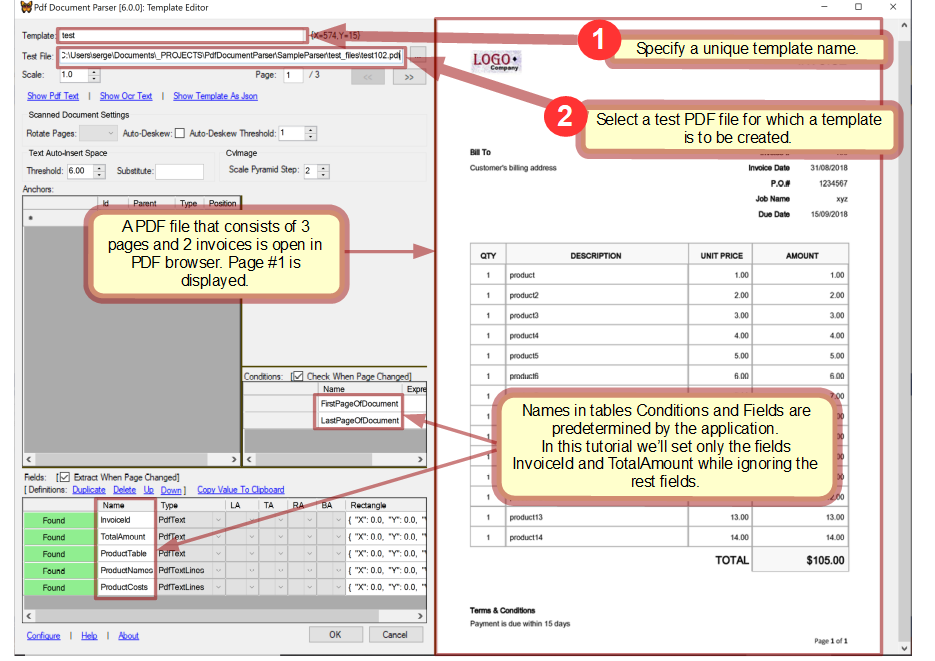
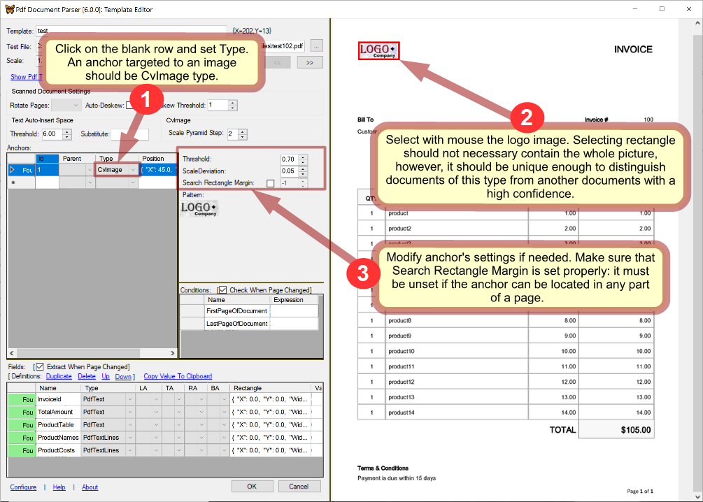
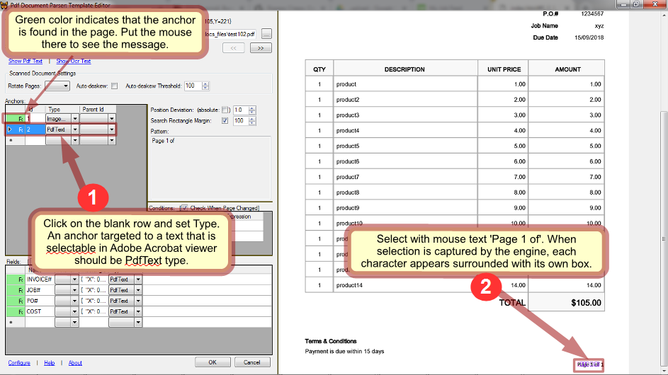
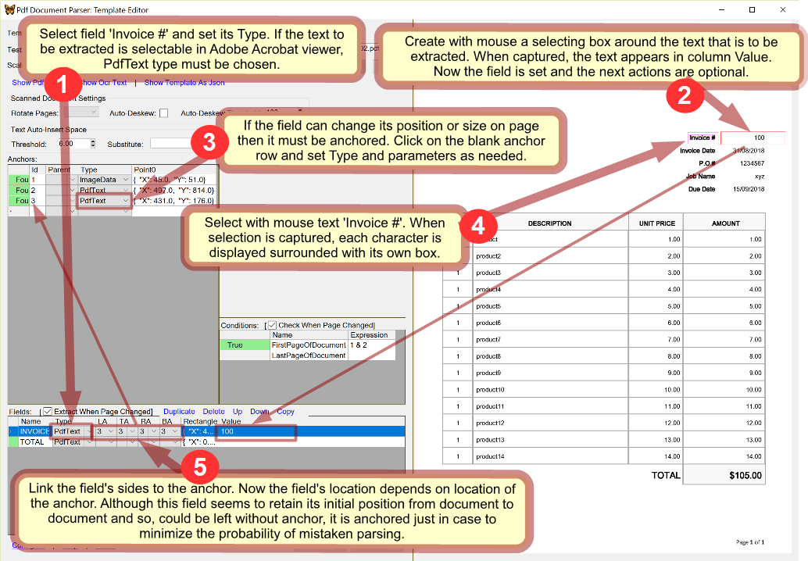
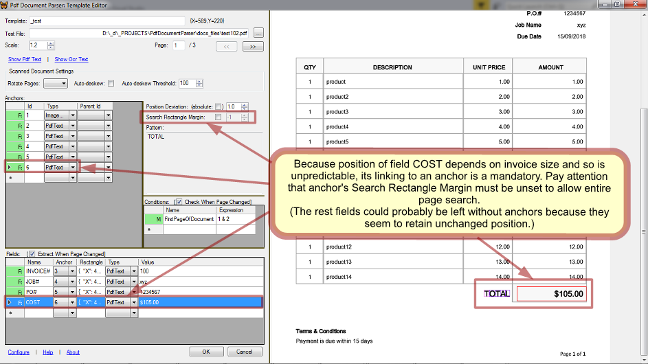
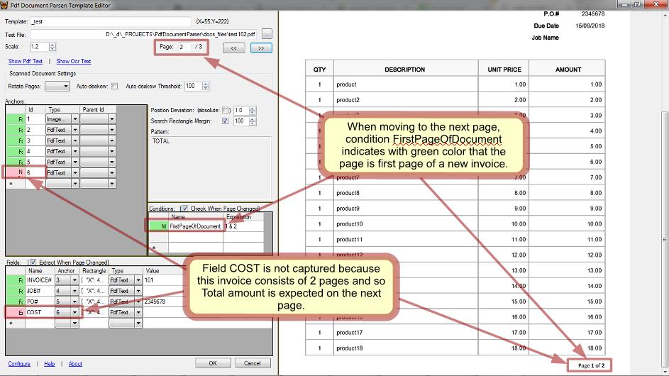
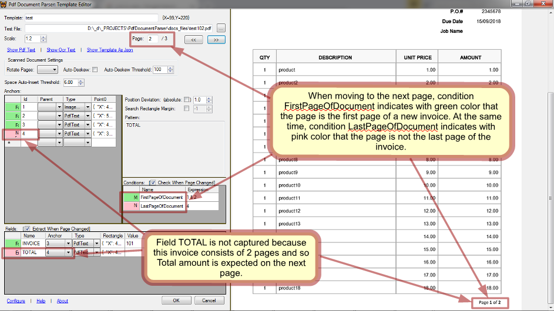

Overview
PdfDocumentParser is a .NET engine designed for parsing PDF documents that conform to predictable graphical layouts - such as forms, CV's, invoices and the like. PdfDocumentParser was designed to be incorporated into an application, thus, drastically reducing efforts of building PDF parsers.
PdfDocumentParser provides the following facilities:
- Template Editor where parsing templates can be created and debugged in an easy manner;
- Parsing API that allows parsing PDF files in a custom manner with a little effort required;
Approach
The main approach of parsing by PdfDocumentParser is based on finding certain text or image fragments on a PDF page and then extracting text/images located relatively to those fragments.
Within this scope PdfDocumentParser is capable of the following:
- search/extract text represented by PDF entities - meant for native PDF files;
- search/extract text obtained by OCR - meant for scanned PDF files;
- search/compare/extract page fragments as images - meant for either native or scanned PDF files;
Also, PdfDocumentParser allows an application to check custom conditions on a PDF page to decide which actions should be taken on it.
Developing application
An application based on PdfDocumentParser has to care about the following main aspects:
- provide storage and management of parsing templates;
- allow a user to create and modify templates with Template Editor;
- implement a custom algorithm of processing PDF files:
- choose a template to be applied on a PDF page;
- process data parsed by the chosen template;
Visual Studio
In Visual Studio:- create your project;
- add PdfDocumentParser project to the solution;
- reference PdfDocumentParser in your project;
- update nuget packages for the solution;
- start developing your parser using PdfDocumentParser API;
Licensing
PdfDocumentParser is provided under GNU Affero General Public License v3.0. Contact me if you want another license.Be noticed that PdfDocumentParser may use third-party software as command line tools or linked libraries that are licensed separately.
Repository
Open repository.Getting started
To get the idea of what can be done with PdfDocumentParser and how it is used, review tutorial of Parsing API and then tutorial of setting template.Template
A parsing template is intended for parsing documents that comply with the same layout (e.g. invoices issued by the same company). It contains information what data should be extracted, where and how.
Obviously, applying a template to documents with layouts different from that it was designed for, brings to incorrect parsing.
Creating and modifying templates is preformed with Template Editor
Anchor
An anchor is a fragment of either text or image captured on a PDF page in order to be searched on any page needed afterwards. An anchor can be used in the following ways:
- fields can be linked to it;
- it can be engaged in conditions;
- other anchors can be linked to it;
Being used does not impose any restriction on an anchor. Thus, an anchor can be used in many ways at the same time.
Anchors are identified by their numbers assigned automatically.
An anchor consists of a single or many elements of the same type which can be either text characters or images. The first element is 'master' and the rest are 'secondary'. Position of its master element is position of the anchor itself.
When an anchor is searched on a page, its master element is searched first and, if found, then its secondary elements are checked being bonded to the master position. Anchor is set found only when all its elements are found.
NOTE: Only the first match on page is used to locate anchor. No further match is searched.
Compound anchor
A compound anchor is a chain of successively linked anchors. It is represented by the last anchor in the chain which gives one's position to it.
A compound anchor is set not found when some of its anchors is not found.
Compound anchors are required for more conditioned search. Usage of compound anchors and simple anchors is the same.
A linked anchor is named 'child' of the linking one which is named 'parent'. When an anchor is linked to another anchor, its search area (when it is set to not entire page) becomes related to its parent anchor's position. That means that a parent anchor is searched not until its first match found as done for a stand-alone anchor, but until a match found that satisfies to the child anchor as well.
More specifically, when a child anchor has Search Rectangle Margin set to not entire page, position of its parent anchor, while searching as parent, may differ from position of the very same anchor, while searching stand-alone.
The same consideration is true for child anchors too: an anchor, whose search area is set to not entire page, may change its position after linking to another anchor.
Thus, NOTE: An anchor acting stand-alone and the same anchor acting as a part of a compound anchor should be considered different anchors because they can have different positions.
Number of anchors in a compound anchor can be any. Though, it should be taken to account that processing time of recursive search performed for a compound anchor exponentially increases with the chain length.
Anchor types
Each of types is processed by its own very different way, therefore choosing the right type is crucial in successful and robust parsing.
PdfText
This type can only be used to anchor to text. It should be used whenever possible because it is most robust and fast.
It is based on the native text presentation inside a PDF file. Elements of this type are character boxes extracted from PDF entities. Every character is a separate anchor element. Together they present a text fragment to be found on page.
| Parameter | Description |
|---|---|
| Position deviation | It allows to loose bonds between master element and secondary elements in an anchor when for some reason they can shift relative to each other. It is measured in pixels and must be a positive float number, non-zero even for identical documents because of discrepancy reasoned by internal image re-scaling.
It makes no sense for an anchor having no secondary element. |
| Position deviation is absolute | If True, position deviation of every secondary element is measured by the master element's position, otherwise, by position of the previous element. The latter is looser than the former. | Search rectangle margin | When set, the area where the anchor is searched is the entire page. Otherwise, the search area is restricted by Search rectangle margin that specifies a rectangular area around the anchor's initial rectangle which is the rectangle where the anchor was located on page while creating. It is measured in pixels. It should be used only when it is known definitely that the anchor is always located in a certain part of page. It helps to avoid undesired matching and speed up processing. |
OcrText
This type can only be used to anchor to text. It should be used only when PdfText does not work which happens on scanned or mixed documents.
It works similarly to PdfText type except that difference that character boxes are provided by OCR engine instead of native PDF entities.
In contrast to PdfText, OcrText type does not ensure 100% accuracy and can acceptably work only with images of resolution not less than 300dpi (see PdfPageImageResolution parameter).
| Parameter | Description |
|---|---|
| Position deviation | See PdfText. |
| Position deviation is absolute | See PdfText. | Search rectangle margin | See PdfText. |
| OCR entire page | NOTE: This switch can completely change parsing. It is because OCR by Tesseract of a larger and a smaller fragments can give different recognition of the same text.
Which is better? OCR of entire page gives sometimes more correct results, sometimes otherwise. But it always takes considerably longer time than OCR of a smaller fragment which is defined by Search rectangle margin. This switch makes sense only if Search rectangle margin is on, otherwise the entire page is OCR'ed anyway. |
ImageData
This type is used to anchor to images.
Elements of an ImageData anchor are images that were selected on PDF page while creating the anchor.
For native PDF documents where images are without discrepancy in quality, ImageData type works quite well.
When anchoring to a text which is presented by image as happens in scanned or mixed documents, there is a choice between ImageData and OcrText types. Which one to choose? If a target image do not change much from document to document and looks the same (no matter how poor its quality is), ImageData is more reliable and fast. However, if a target image has essential discrepancy in size, contrast, brightness, orientation etc. in documents, OcrText may work better.
NOTE: even when an image fragment is searched within the same page where it was extracted from, it cannot be found without a non-zero tolerance. It happens because search hashes of a whole page image and a fragment are produced after downsizing them, and then, when restoring from the hashes, pixel interpolation gives different results for the entire page and the fragment.
| Parameter | Description |
|---|---|
| Position deviation | See PdfText. |
| Position deviation is absolute | See PdfText. | Search rectangle margin | See PdfText. |
| Brightness tolerance | While for native PDF documents it can be 0.1 - 0.2, scanned documents which have brightness discrepancy may need it higher. A higher tolerance gives a less accuracy. |
| Different pixel number tolerance | While for native PDF documents it can be 0.1 - 0.2, scanned documents which have brightness discrepancy may need it higher. A higher tolerance gives a less accuracy. |
| Find best match | If True, looks for the match with the least difference, otherwise returns the first match within the tolerance specified. |
Create anchor
How to create anchors, see in tutorial.
Condition
A condition is defined by a boolean expression that depends on anchors. It is used in the custom application for deciding which actions should be performed on a PDF page. It is checked by method IsCondition(.
Conditions are identified by their names.
The condition collection is dictated by logic of the application, and thus, is predetermined within its scope and is the same for all templates that belong to it.
Boolean expression
Condition expressions are composed of the following symbols: <anchor id>, '!', '&', '|', '(', ')', 'T', 'F'. When an anchor referenced by <anchor id> is found then it is treated as True, otherwise False. The meaning of condition is the boolean result of its expression and is a function of pair [PDF page, template].NOTE: Operands '&' and '|' are processed successively, therefore, for instance, "1 | 2 & 3" and "2 & 3 | 1" are not equivalent. Parentheses should be used to manage precedence of operations.
Sample expressions:
| Expression | Description |
|---|---|
| 1 | The simplest expression which is True when anchor #1 is found. |
| (1 | 7 | 8) & 2 | This kind of expression is useful for instance when a company uses different logos for documents of the same structure. In such a case, instead of creating several separate templates, a single template can be set to accept more than 1 logo image. Respectively anchors #1,7 and 8 are targeted to the possible logos. | !2 | (2 & 3) | Such an expression could be used for instance in decision whether a certain field should be parsed or passed off. | T | In order to keep the processing code unified, a condition can be predefined in some templates. |
Set condition
How to set conditions, see in tutorial.
Field
A field defines certain text or image that is to be extracted from a PDF page. It is retrieved by method GetValue().
Fields are identified by their names. The field collection is dictated by logic of the application, and thus is predetermined within its scope and is the same for all templates that belong to it.
Anchoring
A field optionally can be linked to an anchor. When a field has no anchor, its selecting rectangle retains the initial position which was its position during creation. When a field is linked to an anchor, its rectangle is bonded to its anchor's actual position so that if on some page the anchor shifts, the field shifts together with it.
When it is known definitely that a field appears on every page and always keeps the same position then there is no need to link it to an anchor.
In scanned documents whose margins vary, fields cannot retain constant positions and so always should be processed with anchors.
It is advisable always to link fields to anchors thus minimizing probability of mistaken parsing.
Field types
PdfText
Its value is a text surrounded by field's rectangle. It is obtained from native PDF entities. So it does not work on images.OcrText
Its value is a text surrounded by field's rectangle. It is recognized by OCR engine.For native PDF documents, this type should never be used. But for scanned documents, it is the only way to get text in digital form which can be recorded to a file or database, indexed, searched and so on.
In contrast to PdfText, OcrText type does not ensure 100% accuracy and can acceptably work only with images of resolution not less than 300dpi (see PdfPageImageResolution parameter).
ImageData
Its value is aSystem.Drawing.Bitmap object that contains a fragment of page surrounded by the field's rectangle.
It is used when image is required rather than text or when OcrText type is not reliable.
Set field
How to set fields, see in the tutorial.
Settings
A template has the following settings that influence on parsing:| Parameter | Description |
|---|---|
| Auto-Deskew | It is used for scanned documents. It is always advisable to keep it active in templates targeted to scanned documents. |
| Rotate Pages | It is used mostly for scanned documents. A page must be correctly oriented to get OCR working properly on it. |
| Space Auto-Insert Threshold | It is used while splitting text, captured for PdfText field, onto words.
Also, it is used when displaying PdfText anchor's patterns but has no influence on parsing here. When needed, it should be tuned experimentally. |
Parsing API
Methods
| Method | Property | Description |
|---|---|
Cliver.PdfDocumentParser.PageCollection::ActiveTemplate |
Set active template in PdfDocumentParser. |
Cliver.PdfDocumentParser.Page::IsCondition() |
Check if a condition is met on the page. |
Cliver.PdfDocumentParser.Page::GetValue() |
Extract a field from the page. If anchor of the field was not found, NULL is returned. |
Refer to InvoiceParser as an live example of using PdfDocumentParser in an application.
Pseudo-code
The main idea of using PdfDocumentParser in an application is that custom operations are performed depending on custom conditions.Because of the fact that the collection of conditions is determined by the application, it is impossible to outline 'the most general algorithm' of processing a PDF file with PdfDocumentParser. But some basic algorithm would look like the following:
//pseudo-code: processing a PDF file.
//Note: the classes and methods are not real and serve for simplicity and clarity only.
foreach(page in pdfFile)
{
//find a template appropriate for the page
if(PdfDocumentParser.ActiveTemplate == null)
{
foreach(template in templates)
{
PdfDocumentParser.ActiveTemplate = template;
if(PdfDocumentParser.IsCondition(page, "DocumentFirstPage"))
break;
PdfDocumentParser.ActiveTemplate = null;
}
}
if(PdfDocumentParser.ActiveTemplate == null)
{
logWarning("No template was detected for page: " + page.Number);
continue;
}
//applying the chosen template
object value1 = PdfDocumentParser.GetValue(page, "field1");
//doing something with value1...
<...>
object value2 = PdfDocumentParser.GetValue(page, "field2");
//doing something with value2...
<...>
}
Notice that the above algorithm assumes that only one template can be applied to a PDF page while it is not mandatory in general.
Multi-page documents
Here is a more advanced algorithm designed for PDF files that contain multi-page documents.
//pseudo-code: processing a PDF file that contains multi-page documents.
//Note: the classes and methods are not real and serve for simplicity and clarity only.
foreach(page in pdfFile)
{
//find a template appropriate for the document
if(PdfDocumentParser.ActiveTemplate == null)
{
foreach(template in templates)
{
PdfDocumentParser.ActiveTemplate = template;
if(PdfDocumentParser.IsCondition(page, "DocumentFirstPage"))
break;
PdfDocumentParser.ActiveTemplate = null;
}
}
if(PdfDocumentParser.ActiveTemplate != null)
{
//applying the chosen template
if(PdfDocumentParser.IsCondition(page, "Field1MustBeParsed"))
{
object value1 = PdfDocumentParser.GetValue(page, "field1");
//doing something with value1...
<...>
}
if(PdfDocumentParser.IsCondition(page, "Field2MustBeParsed"))
{
object value2 = PdfDocumentParser.GetValue(page, "field2");
//doing something with value2...
<...>
}
if(PdfDocumentParser.IsCondition(page, "DocumentLastPage"))
PdfDocumentParser.ActiveTemplate = null;
}
}
Tutorial: using Parsing API
Sample task & application
Since PdfDocumentParser can only be used from within an application developed for a certain parsing task, in this tutorial the following sample task is considered:
there are PDF files that consist of invoices issued by different companies. Values INVOICE#, JOB#, PO#, COST must be parsed from every invoice.
It is known that the PDF files to be parsed comply with the following:
- a file can consist of multiple invoices;
- an invoice can consist of multiple pages;
- any page in a file is a part of invoice;
The application developed for this task is InvoiceParser which can be referred to during this tutorial.
Custom configuration
As is obvious from the task requirements, the field collection predetermined in our application should be: INVOICE#, JOB#, PO#, COST.
Now let's decide which conditions are needed in our application.
Since the invoices are issued by different companies, they have different layouts. Every layout requires its own parsing template. Therefore, our application should be able to A)recognize layout of a PDF page in order to know which template should be applied.
Additionally, as invoices can be multi-page, our application has to B)detect the first page of every invoice.
Checks (A) and (B) can be joined into one condition. Let's name it 'FirstPageOfDocument'.
It will work in the following manner: when a template has its FirstPageOfDocument satisfied on a PDF page, it will be chosen for processing of this page and the next ones until the first page of a new invoice is detected. And when a new invoice starts, the previously captured fields should be processed/recorded and cleaned.
Thus, the condition collection in our application will consist of only condition FirstPageOfDocument which is sufficient for the task.
Custom algorithm
Now, summing up the said above, the algorithm of processing a PDF file in our application should be the following:
//pseudo-code: parsing an invoice
//Note: the classes and methods are not real and serve for simplicity and clarity only.
object INVOICE#, JOB#, PO#, COST;
Template currentTemplate;
foreach(page in pdfFile)
{
foreach(template in templates)
{
PdfDocumentParser.ActiveTemplate = template;
if(PdfDocumentParser.IsCondition(page, "DocumentFirstPage"))
{
if(INVOICE# != null)
{
//do something with INVOICE#, JOB#, PO#, COST extracted from the previous invoice...
<...>
INVOICE# = null;
}
currentTemplate = PdfDocumentParser.ActiveTemplate;
break;
}
}
if(currentTemplate != null)
{
PdfDocumentParser.ActiveTemplate = currentTemplate;
object INVOICE# = PdfDocumentParser.GetValue(page, "INVOICE#");
object JOB# = PdfDocumentParser.GetValue(page, "JOB#");
object PO# = PdfDocumentParser.GetValue(page, "PO#");
object COST = PdfDocumentParser.GetValue(page, "COST");
}
}
Refer to InvoiceParser as live code.
Template Editor
Template Editor is a GUI object that is called from the application whenever configuring template is required.How to configure a template, see in the tutorial of setting template.
Template Editor API
| Object | Description |
|---|---|
Cliver.PdfDocumentParser.TemplateForm |
.NET Windows Form that provides abilities of editing/debugging a template. Create TemplateForm with a TemplateManager instance as a parameter and call Show() or ShowDialog() on it. |
Cliver.PdfDocumentParser.TemplateManager |
Abstract class that must be defined with custom routines. Passed to TemplateForm() as a parameter. |
Refer to InvoiceParser as a sample of use.
Tutorial: setting template
This tutorial proceeds with the sample considered in tutorial of Parsing API.InvoiceParser is used as a sample application.
Open Template Editor
The way of opening Template Editor depends on the application. In InvoiceParser a template can be created from scratch or copied from an existing one and then modified as needed. Let's start with a blank template: click the blank row in the table in the main window of InvoiceParser and then click button Edit.
Open a test PDF file in Template Editor: 
Create anchors
Templates in our application have 1 condition and 4 fields (see the configuration).
Let's first create anchors for the condition. As FirstPageOfDocument is intended to identify the type of a document, it needs an anchor targeted to some fragment of a document that is unique to its type. Obviously, such a fragment must identify the document type with a high confidence. Usually the logo of a company that issued the document can serve well this goal.
Create an anchor that captures the logo and thus detects if a page corresponds to the template: 
In addition, as FirstPageOfDocument must be capable to detect the beginning page of a document, it needs an anchor that will do it.
Create an anchor that checks if a page is the first page of a document: 
Anchors for the fields will be created later.
NOTE: when you select a row in either table: anchors, conditions or fields, its status is updated in the head cell and the captured place is displayed in the page viewer.
NOTE: while setting an anchor, if you keep Ctrl pressed, you can select more than 1 element on a PDF page for the same anchor. In that case, to stop selecting and make the anchor set, you have to release Ctrl before releasing the mouse button.
Specify condition
We already have created anchors #1 and #2 that are needed to specify FirstPageOfDocument's expression. It must be True only when the anchors are found together on a page.Set condition FirstPageOfDocument with boolean expression "1 & 2":

While in this sample FirstPageOfDocument is quite good with 2 anchors, sometimes more anchors may be needed: for instance when the same company issues documents of different types and thus company's logo is not sufficient to detect the type.
If the sample task considered here did not stated that every page belongs to an invoice then one more condition to detect last pages of invoices would be needed. However, in accordance with the requirements, such a condition is redundant.
Set fields
Set field INVOICE#: 
In the same way as above set the rest fields and create anchors for them: 
Though fields INVOICE#, JOB#, PO# seem not to need linking to anchors, they were anchored just in case to minimize the probability of mistaken parsing in the future when the layout may change.
Check template
When all the conditions and fields are set, it's time to walk through the file and see how the template works on every page.
The page #2 begins a new invoice: 
The page #3 continues and ends an invoice: 
The template worked properly on the test file. Click OK to save it.
Global settings
PdfDocumentParser has parameters that are the same within the application's scope and can be modified in the configuration dialog invoked from Template Editor.| Parameter | Description |
|---|---|
| PdfPageImageResolution | It is the resolution with which PdfDocumentParser converts PDF pages into images. It influences on the quality of PDF view in Template Editor.
What is more important, it also impacts on work of OctText anchors and fields. It must be not less than 300dpi (even if the resolution of input documents is lower), otherwise OCR will not work properly. The higher the resolution, the better quality of OCR is. On the other hand, increasing the resolution increases processing time. Usually there is no need to touch it. |
| CoordinateDeviationMargin | It is a zero value threshold while comparing pixel coordinates which may have slight discrepancy because of conversions.
Usually there is no need to touch it. |
InvoiceParser
Invoice Parser is a customized desktop application based on PdfDocumentParser. It can be referred to as an example of incorporating PdfDocumentParser. Also, as its custom specificity lays only in a way of how PDF files are parsed, the rest code can be used as a framework.Generally, it does the following:
- enhances
PdfDocumentParser.Templatewith auxiliary properties that are not related to parsing; - stores and manages templates;
- predetermines the condition and field collections;
- defines
PdfDocumentParser.TemplateForm.TemplateManagerand callsPdfDocumentParser.TemplateFormfor template editing; - processes PDF files in a custom manner;
Assumptions
- by default, a PDF file can contain documents of the same type only. However, it can be tuned for every template individually;
- once detected, a document is considered continued until the next document begins or the file ends;
Enhanced template parameters
| Parameter | Description |
|---|---|
| Active | Inactive template is ignored while parsing. |
| Group | An optional mark that can be helpful for managing templates. |
| Order | A weight indicating template's order in check line. It is intended to reduce processing time. Templates with the less order are tried first. |
| DTLPage | The last page in PDF files that is to be checked for this template. It is intended to reduce processing time. |
| Filter | It is a Regex applied to PDF file path to recognize the proper template. Optional. It is intended to reduce processing time. |
| Filter | It is a Regex applied to PDF file path to recognize the proper template. Optional. It is intended to reduce processing time. |
| SFTRegex | It is a Regex that matches to names of templates that can share the same PDF file. By default it is NULL meaning that such a template if chosen for processing a PDF file cannot be changed for this file. |
Considerations
When processing documents InvoiceParser applies every active template to every new document to recognize a proper template. So, if you have 50 templates and 1000 files evenly distributed for templates, InvoiceParser will do on average 1000/2 *50 = 25,000 template tries. It may take a considerable time especially when templates use OCR. Processing time can be reduced by the following ways:
- specify file filters for templates. If it can be done then the other tips are not needed;
- specify template orders so that templates that require a longer time for recognition have a higher order. E.g. templates that use auto-deskew should be checked in the last place;
- keep templates that are known as not corresponding to the files to be processed right now, inactive;